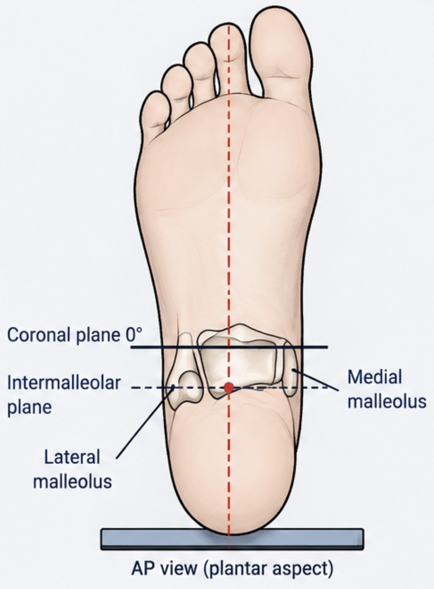
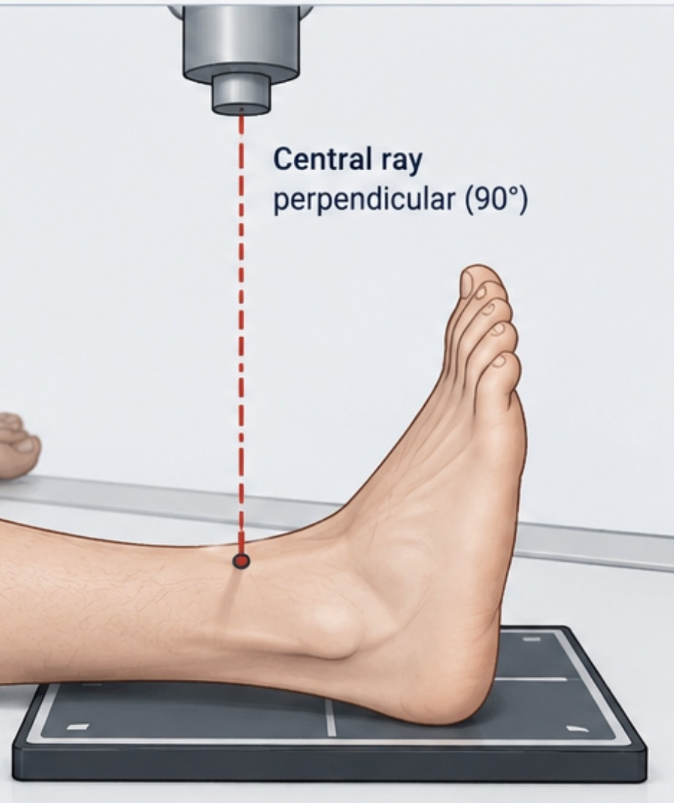
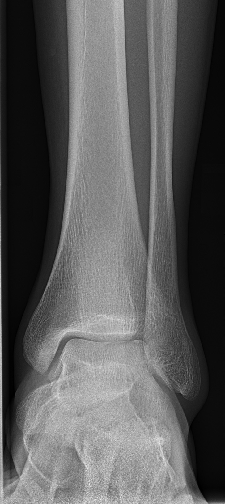
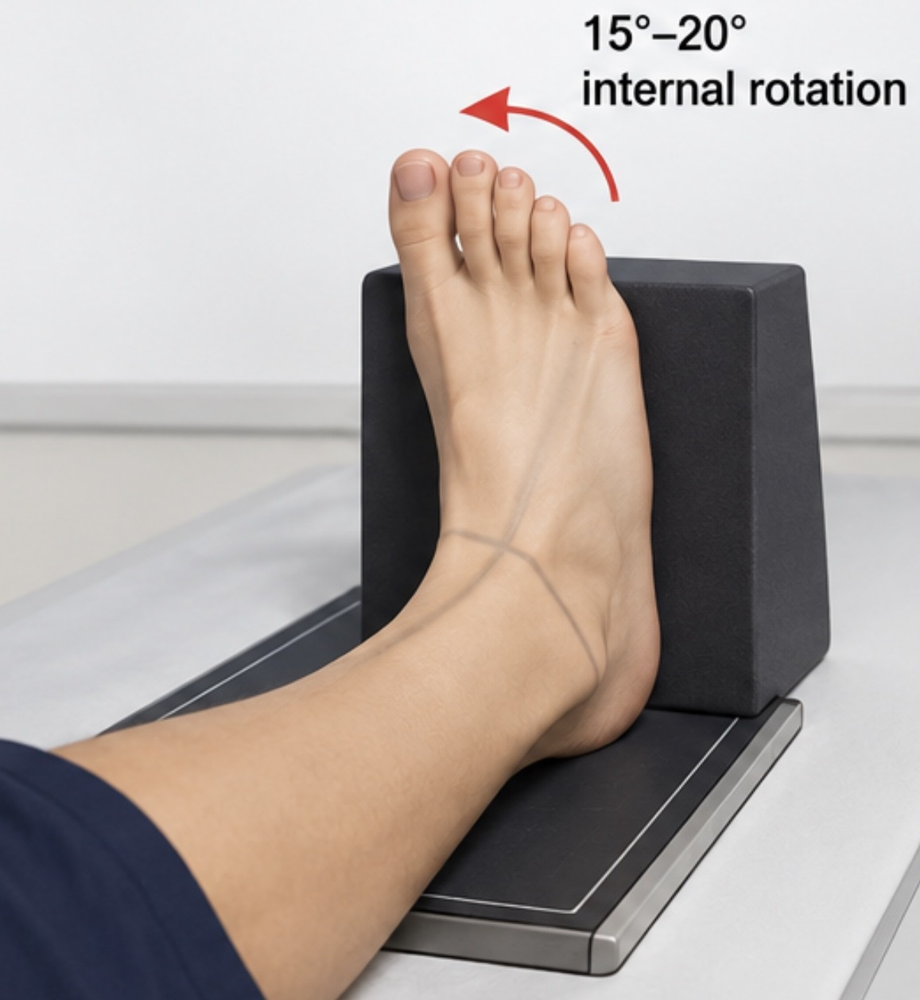
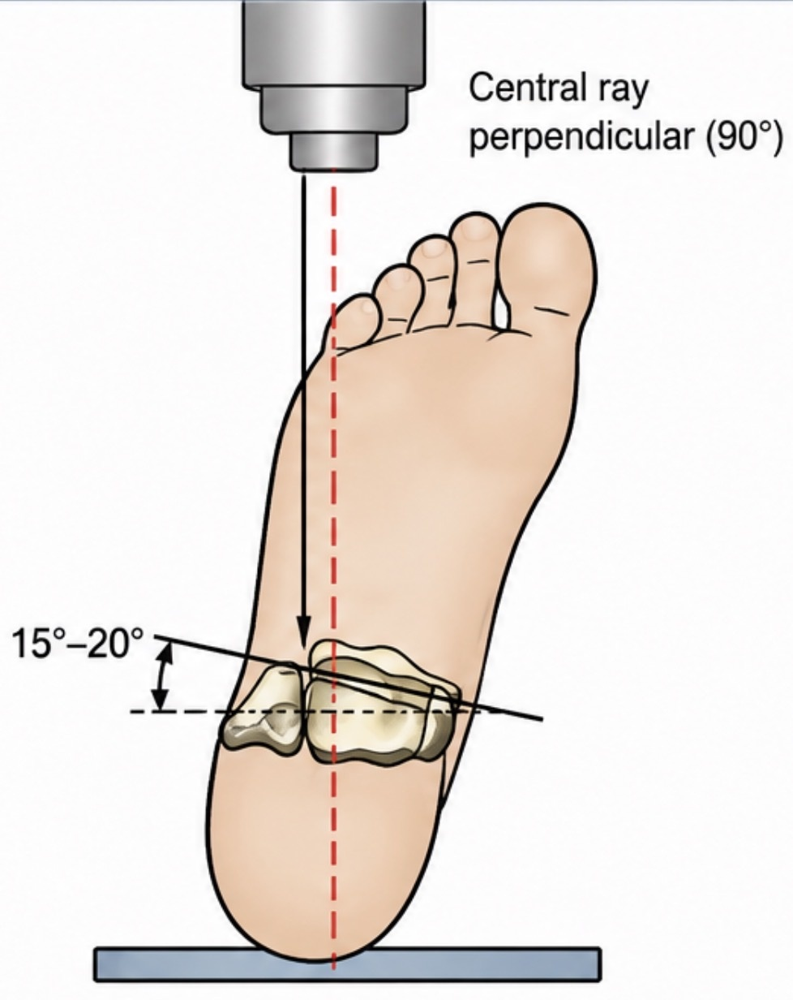
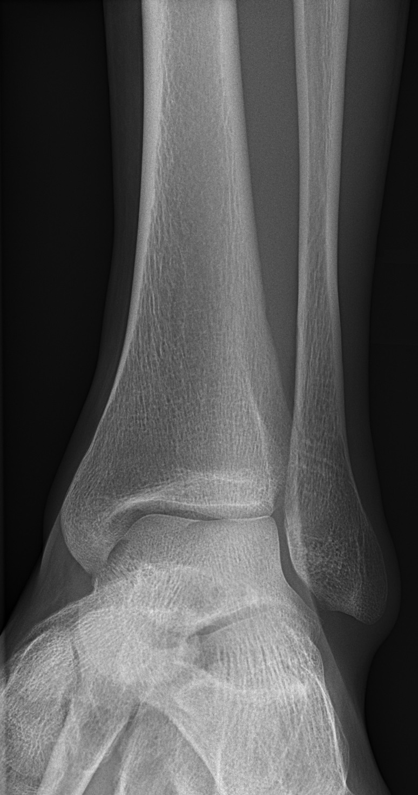
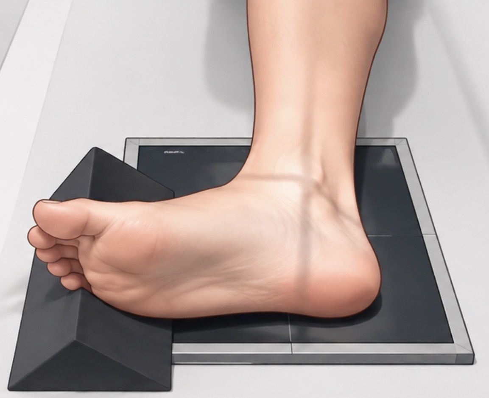
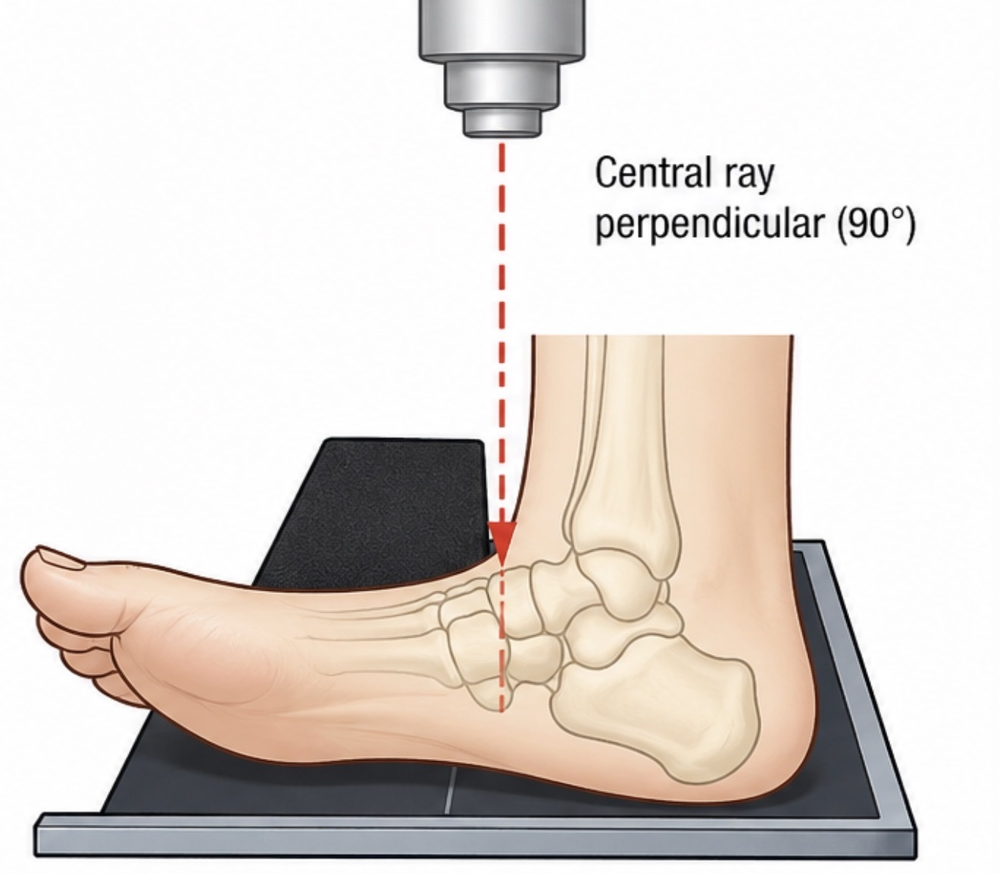
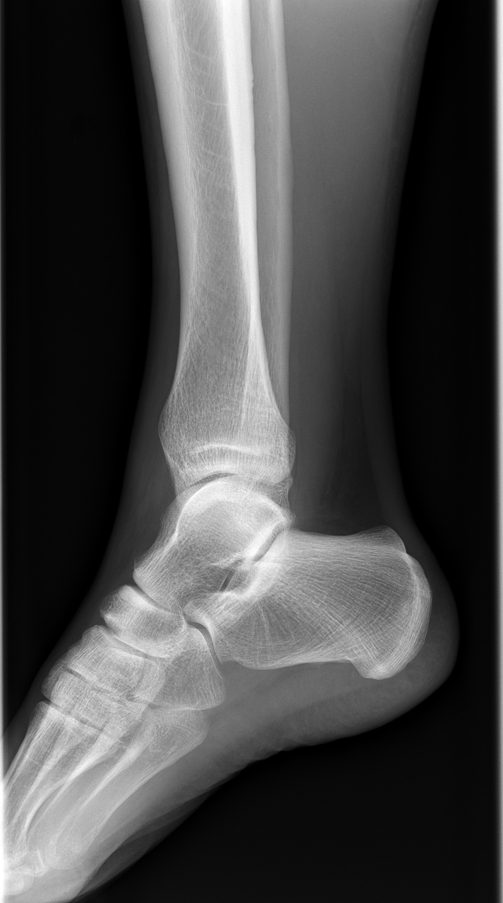

Standard projection for initial assessment of the ankle.
ANKLE RADIOGRAPHY
Ankle X-ray Overview
The standard ankle series commonly includes AP, Mortise and Lateral projections. Select a projection to explore positioning, central ray and image evaluation.
🎯 AP — Why this view?
Provides an overall frontal assessment of the ankle and demonstrates the distal tibia, distal fibula, talus and ankle region.
🎯 Mortise — Why this view?
Designed to demonstrate the ankle mortise and joint spaces with reduced superimposition of the malleoli.
🎯 Lateral — Why this view?
Demonstrates the ankle in lateral projection and provides complementary assessment of the distal tibia, talus and hindfoot anatomy.
🚑 Trauma considerations
Avoid unnecessary movement of the injured limb.
Do not force dorsiflexion or rotation when this causes pain or may compromise the injury.
Adapt positioning to the patient's clinical condition and tolerance.
Use trauma or horizontal-beam techniques when clinically indicated and in accordance with local protocols.
Communicate clearly with the patient and clinical team before moving or repositioning the limb.
AP Ankle Positioning

Central Ray

① Patient position
Patient supine on the X-ray table.
Leg extended and supported.
Foot positioned for an AP ankle projection.
Avoid unnecessary rotation.
② Central ray
CR perpendicular to the detector.
Centre to the ankle joint / midpoint between the malleoli.
Collimate to the area of interest.
③ AP Ankle Evaluation
Distal tibia and fibula included.
Medial and lateral malleoli demonstrated.
Talar dome and ankle joint visible.
Assess for rotation and overall image quality.

⚠️ Common positioning errors
Unwanted internal or external rotation.
Failure to include the distal tibia and fibula.
Suboptimal foot positioning where dorsiflexion is achievable.
Correction:
Recheck leg and foot alignment, centring and collimation before exposure.
💡 Positioning pearl: Compare the malleoli and overall ankle alignment to help identify unwanted rotation.
Mortise Positioning

Central Ray

① Patient position
Patient supine with the leg extended.
Dorsiflex the foot where possible.
Internally rotate the entire leg and foot 15°–20°.
Aim to place the intermalleolar line parallel to the detector.
② Central ray
CR perpendicular to the detector.
Centre to the ankle joint, midway between the malleoli.
Collimate to include the distal tibia, fibula and talus.
③ Mortise Evaluation
Ankle mortise joint space demonstrated.
Medial, lateral and superior joint spaces assessed.
Distal tibia and fibula included.
Minimal tibiofibular overlap at the distal tibiofibular joint.
Assess positioning, rotation and overall image quality.

⚠️ Common positioning errors
Insufficient internal rotation, leaving the mortise inadequately demonstrated.
Excessive rotation causing inappropriate overlap.
Rotating the foot without rotating the whole lower limb consistently.
Correction:
Rotate the leg and foot together and reassess the intermalleolar alignment.
💡 Positioning pearl: Rotate the whole leg and foot together to avoid unwanted rotation at the knee or ankle.
Lateral Ankle Positioning

Central Ray

① Patient position
Patient positioned lateral recumbent or seated as tolerated.
Affected side placed against the detector.
Adjust the ankle to a true lateral position.
Dorsiflex the foot where possible and support the opposite limb clear of the field.
② Central ray
CR perpendicular to the detector.
Centre to the ankle joint.
Direct the central ray approximately midway between the malleoli.
Collimate to include the distal tibia and fibula, talus and calcaneus.
③ Lateral Ankle Evaluation
Distal tibia and fibula included.
Talus and ankle joint demonstrated in lateral projection.
Talar domes and malleoli reasonably superimposed for a true lateral.
Calcaneus and relevant hindfoot anatomy included.
Assess positioning, rotation and overall image quality.

⚠️ Common positioning errors
Not achieving a true lateral position.
Excessive rotation of the lower leg.
Inadequate demonstration of the required ankle and hindfoot anatomy.
Correction:
Support the patient comfortably and adjust positioning to minimise rotation without unnecessary movement.
💡 Positioning pearl: Aim for a true lateral by minimising rotation and achieving appropriate superimposition of the ankle structures.
NORMAL RADIOGRAPHIC ANATOMY
Ankle Radiographs
Explore the normal AP ankle radiograph and switch between the clean image and labelled anatomy.
Interactive anatomyClick a structure or show all labels.
AP Ankle — Interactive Anatomy
Click an anatomical structure for an individual label, or use Show all anatomy to review every labelled structure.